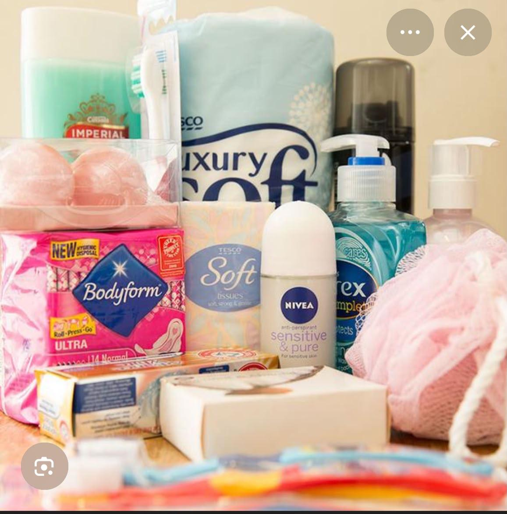

Our Programmes
What we do every month in Gauteng schools. We have 3 main programmes. Click tabs below.

Monthly Packs - R50 Each
We give free sanitary packs to school girls. In each pack we put Bodyform pads, small soap, Nivea deodorant, tissues and a booklet. This is the real photo of our packs.
- Cost per pack: R50 (donate via Get Involved page)
- Availability: 5000+ packs monthly, distributed every 1st week
- Impact: 1 pack = 1 girl stays in school for 1 month

Education Workshops - Free
We go to schools in Soweto and Tembisa and teach girls about periods, hygiene and health. We use simple posters and we talk in their language.
- Cost: Free for all schools
- Availability: 45 workshops in 2025, book via contact page
- Schools visited: 200+ schools in Gauteng

Community Drives - Volunteer
We partner with local shops in Pretoria and Joburg to collect pads and soap. People can drop donations at our office or we collect. Our volunteers help pack and deliver.
- Cost: Free to volunteer, training provided
- Availability: Every Saturday 9am-1pm, 45 Vilakazi St
- Partners: 12 shops, 25 volunteers